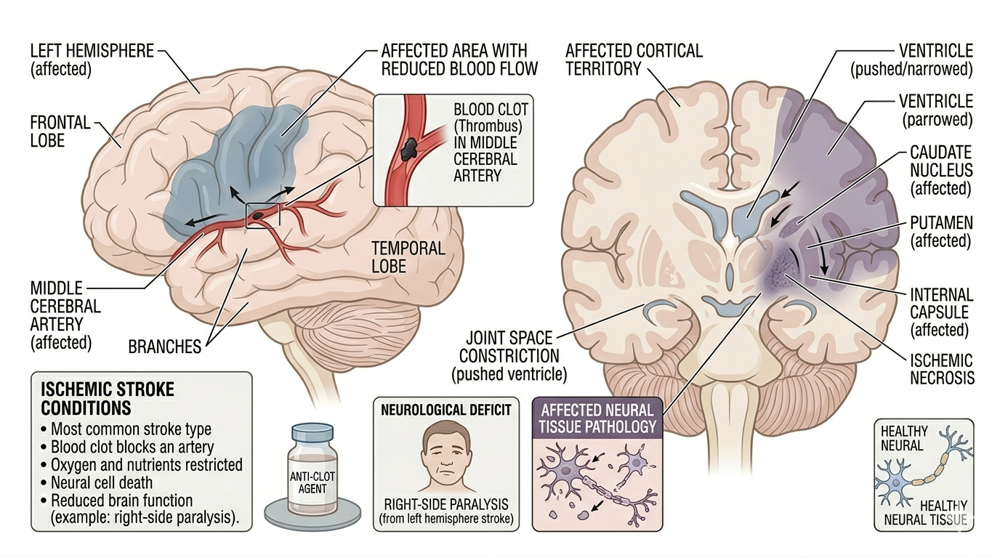

Stroke Assessment

Quick Definitions (3 Marks)
Stroke: A sudden loss of neurological function caused by interruption of blood supply to the brain.
Patient Profile
Age, medical history (HTN, diabetes), lifestyle
Subjective Assessment
- Sudden weakness (one side)
- Speech difficulty
- Loss of balance
- History of stroke
Objective Assessment
- Observation (hemiplegia)
- Muscle tone (spasticity/flaccidity)
- Reflexes
- Coordination
- Balance assessment
- Gait analysis
Step-wise Clinical Assessment
- Introduction & consent
- History taking
- Check red flags
- Observation
- Tone assessment
- Reflex testing
- Coordination
- Balance assessment
- Clinical reasoning
- Physiotherapy diagnosis
Clinical Reasoning
One-sided weakness → stroke
Spasticity → UMN lesion
Loss of coordination → cerebellar involvement
Clinical Decision Flow
Sudden weakness → Check side involvement
↓
One side → Stroke likely
↓
Check tone
↓
Spastic → UMN lesion
Flaccid → Acute stage
Differential Diagnosis
- Stroke
- Brain tumor
- Spinal cord injury
Red Flags 🚨
- Sudden onset
- Loss of consciousness
- Severe headache
Viva Questions
- What is stroke?
- What is hemiplegia?
- Difference between UMN and LMN lesion?
- What is spasticity?
Key Points for Exam 📌
- Stroke is neurological emergency
- Usually affects one side of body
- UMN signs are common
- Early rehab is important
Common Mistakes ⚠️
- Ignoring neurological signs
- Not assessing tone
- Skipping balance assessment
- Confusing stroke with muscle weakness
Comparison 🔍
| Condition |
Main Feature |
| Stroke |
One-sided weakness (hemiplegia) |
| Parkinson’s |
Tremor + bradykinesia |
Case Example 🧾
60-year-old male presented with sudden onset weakness on one side of body
and difficulty in speech. On examination, patient showed hemiplegia
and increased muscle tone, indicating stroke.
Clinical Pearls 💡
- Sudden onset is hallmark of stroke
- One-sided weakness is most common sign
- Spasticity develops later (UMN lesion)
Quick Revision ⚡
Stroke → One side weakness
UMN signs → Spasticity
Hemiplegia → Key feature
Sudden onset → Emergency
⬅ Back to Home